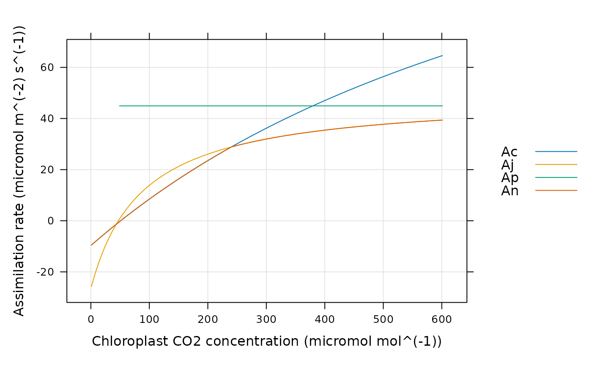

Calculate C3 assimilation rates
calculate_c3_assimilation.RdCalculates C3 assimilation rates based on the Farquhar-von-Caemmerer-Berry model. This function can accomodate alternative colum names for the variables taken from Licor files in case they change at some point in the future. This function also checks the units of each required column and will produce an error if any units are incorrect.
Usage
calculate_c3_assimilation(
data_table,
alpha_g,
alpha_old,
alpha_s,
alpha_t,
Gamma_star,
J_at_25,
RL_at_25,
Tp_at_25,
Vcmax_at_25,
atp_use = 4.0,
nadph_use = 8.0,
curvature_cj = 1.0,
curvature_cjp = 1.0,
cc_column_name = 'Cc',
j_norm_column_name = 'J_norm',
kc_column_name = 'Kc',
ko_column_name = 'Ko',
oxygen_column_name = 'oxygen',
rl_norm_column_name = 'RL_norm',
total_pressure_column_name = 'total_pressure',
tp_norm_column_name = 'Tp_norm',
vcmax_norm_column_name = 'Vcmax_norm',
hard_constraints = 0,
perform_checks = TRUE,
return_table = TRUE,
...
)Arguments
- data_table
A table-like R object such as a data frame or an
exdf.- alpha_g
A dimensionless parameter where
0 <= alpha_g <= 1, representing the proportion of glycolate carbon taken out of the photorespiratory pathway as glycine.alpha_gis often assumed to be 0. Ifalpha_gis not a number, then there must be a column indata_tablecalledalpha_gwith appropriate units. A numeric value supplied here will overwrite the values in thealpha_gcolumn ofdata_tableif it exists.- alpha_old
A dimensionless parameter where
0 <= alpha_old <= 1, representing the fraction of remaining glycolate carbon not returned to the chloroplast after accounting for carbon released as CO2.alpha_oldis often assumed to be 0. Ifalpha_oldis not a number, then there must be a column indata_tablecalledalpha_oldwith appropriate units. A numeric value supplied here will overwrite the values in thealpha_oldcolumn ofdata_tableif it exists.- alpha_s
A dimensionless parameter where
0 <= alpha_s <= 0.75 * (1 - alpha_g)representing the proportion of glycolate carbon taken out of the photorespiratory pathway as serine.alpha_sis often assumed to be 0. Ifalpha_sis not a number, then there must be a column indata_tablecalledalpha_swith appropriate units. A numeric value supplied here will overwrite the values in thealpha_scolumn ofdata_tableif it exists.- alpha_t
A dimensionless parameter where
0 <= alpha_t <= 1representing the proportion of glycolate carbon taken out of the photorespiratory pathway as CH2-THF.alpha_tis often assumed to be 0. Ifalpha_tis not a number, then there must be a column indata_tablecalledalpha_twith appropriate units. A numeric value supplied here will overwrite the values in thealpha_tcolumn ofdata_tableif it exists.- Gamma_star
The CO2 compensation point in the absence of day respiration, expressed in
micromol mol^(-1). IfGamma_staris not a number, then there must be a column indata_tablecalledGamma_starwith appropriate units. A numeric value supplied here will overwrite the values in theGamma_starcolumn ofdata_tableif it exists.- J_at_25
The electron transport rate at 25 degrees C, expressed in
micromol m^(-2) s^(-1). Note that this is _not_Jmax, and in general will depend on the incident photosynthetically active flux density. IfJ_at_25is not a number, then there must be a column indata_tablecalledJ_at_25with appropriate units. A numeric value supplied here will overwrite the values in theJ_at_25column ofdata_tableif it exists.- RL_at_25
The respiration rate at 25 degrees C, expressed in
micromol m^(-2) s^(-1). IfRL_at_25is not a number, then there must be a column indata_tablecalledRL_at_25with appropriate units. A numeric value supplied here will overwrite the values in theRL_at_25column ofdata_tableif it exists.- Tp_at_25
The maximum rate of triphosphate utilization at 25 degrees C, expressed in
micromol m^(-2) s^(-1). IfTp_at_25is not a number, then there must be a column indata_tablecalledTp_at_25with appropriate units. A numeric value supplied here will overwrite the values in theTp_at_25column ofdata_tableif it exists.- Vcmax_at_25
The maximum rate of rubisco carboxylation at 25 degrees C, expressed in
micromol m^(-2) s^(-1). IfVcmax_at_25is not a number, then there must be a column indata_tablecalledVcmax_at_25with appropriate units. A numeric value supplied here will overwrite the values in theVcmax_at_25column ofdata_tableif it exists.- atp_use
The number of ATP molecules used per C3 cycle.
- nadph_use
The number of NADPH molecules used per C3 cycle.
- curvature_cj
A dimensionless quadratic curvature parameter greater than or equal to 0 and less than or equal to 1 that sets the degree of co-limitation between
WcandWj. A value of 1 indicates no co-limitation.- curvature_cjp
A dimensionless quadratic curvature parameter greater than or equal to 0 and less than or equal to 1 that sets the degree of co-limitation between
WcjandWp. A value of 1 indicates no co-limitation.- cc_column_name
The name of the column in
data_tablethat contains the chloroplastic CO2 concentration inmicromol mol^(-1).- j_norm_column_name
The name of the column in
data_tablethat contains the normalizedJvalues (with units ofnormalized to J at 25 degrees C).- kc_column_name
The name of the column in
data_tablethat contains the Michaelis-Menten constant for rubisco carboxylation inmicromol mol^(-1).- ko_column_name
The name of the column in
data_tablethat contains the Michaelis-Menten constant for rubisco oxygenation inmmol mol^(-1).- oxygen_column_name
The name of the column in
data_tablethat contains the concentration of O2 in the ambient air, expressed as a percentage (commonly 21% or 2%); the units must bepercent.- rl_norm_column_name
The name of the column in
data_tablethat contains the normalizedRLvalues (with units ofnormalized to RL at 25 degrees C).- total_pressure_column_name
The name of the column in
data_tablethat contains the total pressure inbar.- tp_norm_column_name
The name of the column in
data_tablethat contains the normalizedTpvalues (with units ofnormalized to Tp at 25 degrees C).- vcmax_norm_column_name
The name of the column in
data_tablethat contains the normalizedVcmaxvalues (with units ofnormalized to Vcmax at 25 degrees C).- hard_constraints
An integer numerical value indicating which types of hard constraints to place on the values of input parameters; see below for more details.
- perform_checks
A logical value indicating whether to check units for the required columns. This should almost always be
TRUE. The option to disable these checks is only intended to be used whenfit_c3_acicalls this function, since performing these checks many times repeatedly slows down the fitting procedure.- return_table
A logical value indicating whether to return an
exdfobject. This should almost always beTRUE. The option to return a vector is mainly intended to be used whenfit_c3_acicalls this function, since creating anexdfobject to return will slow down the fitting procedure.- ...
Optional arguments; see below.
Details
The Busch et al. (2018) and Busch (2020) model:
This function generally follows the Farquhar-von-Caemmerer-Berry model as
described in Busch et al. (2018) and Busch (2020) with a few modifications
described below. In this formulation, the steady-state net CO2 assimilation
rate An is calculated according to
An = (1 - Gamma_star_agt / PCc) * Vc - RL,
where Gamma_star is the CO2 compensation point in the absence of day
respiration, Gamma_star_agt is the effective value of Gamma_star
accounting for glycolate carbon remaining in the cytosol, PCc is the
partial pressure of CO2 in the chloroplast, Vc is the RuBP
carboxylation rate, and RL is the rate of respiration in the light.
Gamma_star_agt is given by
Gamma_star_agt = (1 - alpha_g + 2 * alpha_t) * Gamma_star,
where alpha_g and alpha_t are the fractions of glycolate carbon
leaving the photorespiratory pathway as glycine and CH2-THF, respectively.
The model considers three potential values of Vc that correspond to
limitations set by three different processes: Rubisco activity, RuBP
regeneration, and triose phopsphate utilization (TPU). The Rubisco-limited
carboxylation rate Wc is given by
Wc = PCc * Vcmax / (PCc + Kc * (1.0 + POc / Ko)),
where Vcmax is the maximum rate of Rubisco carboxylation, Kc is
the Michaelis-Menten constant for CO2, Ko is the Michaelis-Menten
constant for O2, and POc is the partial pressure of O2 in the
chloroplast.
The RuBP-regeneration-limited carboxylation rate Wj is given by
Wj = PCc * J / (4 * PCc + Gamma_star_agt * (8 + 16 * alpha_g - 8 * alpha_t + 8 * alpha_s)),
where J is the RuBP regeneration rate and alpha_s is the
fraction of glycolate carbon leaving the photorespiratory pathway as serine.
The TPU-limited carboxylation rate is given by
Wp = PCc * 3 * Tp / (PCc - Gamma_star_agt * (1 + 3 * alpha_g + 6 * alpha_t + 4 * alpha_s)),
where Tp is the maximum rate of triose phosphate utilization. Note that
this equation only applies when PCc > Gamma_star_agt * (1 + 3 * alpha_g
+ 6 * alpha_t + 4 * alpha_s); for smaller values of PCc, TPU cannot
limit the RuBP carboxylation rate and Wp = Inf. (Lochocki & McGrath,
under review).
The actual carboxylation rate is typically chosen to be the smallest of the three potential rates:
Vc = min{Wc, Wj, Wp}.
However, it is also possible to allow co-limitation between the processes by
using quadratic mixing equations. In other words, the carboxylation rate
co-limitated by Rubisco activity and RuBP regeneration Wcj is given by
the smaller root of the following quadratic equation:
curvature_cj * Wcj^2 - Wcj * (Wc + Wj) + Wc * Wj = 0,
where curvature_cj described the "curvature" of the mixing; if
curvature_cj is 1, this is equivalent to Wcj = min{Wc, Wj}; if
curvature_cj is 0, then Wcj is the geometric mean of Wc
and Wj. Any value below 1 will produce a smooth curve rather than the
abrupt transitions that occur when choosing the simple minimum. Likewise, the
carboxylation rate co-limited by Wcj and Wp (called Wcjp;
in other words, the rate co-limited by all three processes) is given by the
smaller root of
curvature_cjp * Wcjp^2 - Wcjp * (Wcj + Wp) + Wcj * Wp = 0.
Then, Wcjp is used in place of Vc when calculating the net CO2
assimilation rate. For more information about the quadratic mixing technique,
see Collatz et al. (1990) and Collatz et al. (1991).
In the equations above, several of the variables depend on the leaf
temperature. In particular, the leaf-temperature-adjusted values of
Vcmax, J, Tp, and RL are determined from their
base values at 25 degrees C and a temperature-dependent multiplicative factor.
Also note that PCc is calculated from the chloroplastic CO2
concentration Cc using the total pressure (ambient pressure + chamber
overpressure).
In addition to the carboxylation and assimilation rates already mentioned, it is also possible to calculate the net CO2 assimilation rates determined by Rubisco activity, RuBP regeneration, and TPU as follows:
Ac = (1 - Gamma_star_agt / PCc) * Wc - RL
Aj = (1 - Gamma_star_agt / PCc) * Wj - RL
Ap = (1 - Gamma_star_agt / PCc) * Wp - RL
The Busch model with nitrogen restrictions:
Note that the implementation as described above does not currently facilitate the inclusion of nitrogen limitations (Equations 15-21 in Busch et al. (2018)).
The "old" model:
In an older version of the model, alpha_g, alpha_s, and
alpha_t are replaced with a single parameter alpha_old. Most
publications refer to this simply as alpha, but here we follow the
notation of Busch et al. (2018) for clarity. In this version, there is no
disctinction between Gamma_star_agt and Gamma_star. Other
differences are described below.
The RuBP-regeneration-limited carboxylation rate Wj is given by
Wj = PCc * J / (atp_use * PCc + nadph_use * Gamma_star),
Here we have allowed atp_use and nadph_use to be variables
rather than taking fixed values (as they do in many sources). This is
necessary because not all descriptions of the FvCB model use the same values,
where the different values are due to different assumptions about the energy
requirements of RuBP regeneration.
The TPU-limited carboxylation rate is given by
Wp = PCc * 3 * Tp / (PCc - Gamma_star * (1 + 3 * alpha_old)),
Note that this equation only applies when PCc > Gamma_star * (1 +
3 * alpha_old); for smaller values of PCc, TPU cannot limit the RuBP
carboxylation rate and Wp = Inf. (Lochocki & McGrath, under review).
Using either version of the model:
When using calculate_c3_assimilation, it is possible to use either
version of the model. Setting alpha_g, alpha_s, and
alpha_t to zero is equivalent to using the older version of the model,
while setting alpha_old = 0 is equivalent to using the newer version of
the model. If all alpha parameters are zero, there is effectively no
difference between the two versions of the model. Attempting to set a nonzero
alpha_old if either alpha_g, alpha_s, or alpha_t
is nonzero is forbidden since it would represent a mix between the two models;
if such values are passed as inputs, then an error will be thrown.
Hard constraints:
Most input parameters to the FvCB model have hard constraints on their values
which are set by their biochemical or physical interpretation; for example,
Vcmax cannot be negative and alpha_g must lie between 0 and 1.
Yet, because of measurement noise, sometimes it is necessary to use values
outside these ranges when fitting an A-Ci curve with fit_c3_aci
or fit_c3_variable_j. To accomodate different potential use
cases, it is possible to selectively apply these hard constraints by
specifying different values of the hard_constraints input argument:
hard_constraints = 0: Constraints are only placed on inputs that are user-supplied and cannot be fit, such asKc.hard_constraints = 1: Includes the same constraints as whenhard_constraintsis 0, with the additional constraint that allCcvalues must be non-negative.hard_constraints = 2: Includes the same constraints as whenhard_constraintsis 1, which additional constraints on the parameters that can be fitted. For example,Vcmax_at_25must be non-negative andalpha_gmust lie between 0 and 1.
If any input values violate any of the specified constraints, an error message will be thrown.
Optional arguments:
use_min_A: If an input argument called
use_min_Ais supplied and its value isTRUE, then the "minimum assimilation" variant of the FvCB model will be used. In this case,Anwill be calculated asAn = min{Ac, Aj, Ap}. In general, using this variant is not recommended.It should only be used to investigate errors that may occur when using the minimal assimilation rate rather than the minimal carboxylation rate.TPU_threshold: If an input argument called
TPU_thresholdis supplied and its numeric value is notNULL, then TPU limitations will only be allowed for values ofCcabove this threshold. This threshold will be used in place of the values discussed in the equations above. In general, using this option is not recommended. It should only be used to investigate errors that may occur when using a fixed TPU threshold.use_FRL: If an input argument called
use_FRLis supplied and its value isTRUE, thenAnwill always be set toAcforCc < Gamma_star. This "forced Rubisco limitation" can only be used along with the "minimum assimilation" variant (use_min_A = TRUE).consider_depletion: If an input argument called
consider_depletionis supplied and its value isTRUE, then RuBP depletion will be considered to be an additional potential limiting process. In this case,Vcwill be calculated asVc = min{Wc, Wj, Wp, Wd}, whereWdis zero whenCc < Gamma_starandInfotherwise. Note that the value ofWd(andAd = (1 - Gamma_star / PCc) * Wd - RL) will always be returned, regardless of whether RuBP depletion is considered when calculatingAn.
References:
Busch, Sage, & Farquhar, G. D. "Plants increase CO2 uptake by assimilating nitrogen via the photorespiratory pathway." Nature Plants 4, 46–54 (2018) [doi:10.1038/s41477-017-0065-x ].
Busch "Photorespiration in the context of Rubisco biochemistry, CO2 diffusion and metabolism." The Plant Journal 101, 919–939 (2020) [doi:10.1111/tpj.14674 ].
von Caemmerer, S. "Biochemical Models of Leaf Photosynthesis" (CSIRO Publishing, 2000) [doi:10.1071/9780643103405 ].
Collatz, G. J., Ball, J. T., Grivet, C. & Berry, J. A. "Physiological and environmental regulation of stomatal conductance, photosynthesis and transpiration: a model that includes a laminar boundary layer." Agricultural and Forest Meteorology 54, 107–136 (1991) [doi:10.1016/0168-1923(91)90002-8 ].
Collatz, G. J., Berry, J. A., Farquhar, G. D. & Pierce, J. "The relationship between the Rubisco reaction mechanism and models of photosynthesis." Plant, Cell & Environment 13, 219–225 (1990) [doi:10.1111/j.1365-3040.1990.tb01306.x ].
Lochocki & McGrath "Widely Used Variants of the Farquhar-von-Caemmerer-Berry Model Can Cause Errors in Parameter Estimates and Simulations." submitted.
Value
The return value depends on the value of return_table:
If
return_tableisTRUE, the return value is anexdfobject with the following columns, calculated as described above:Tp_tl,Vcmax_tl,RL_tl,J_tl,Ac,Aj,Ap,An,Vc, and others. The category for each of these new columns iscalculate_c3_assimilationto indicate that they were created using this function.If
return_tableisFALSE, the return value is a list with the following named elements:An,Ac,Aj,Ap, andJ_tl. Each element is a numeric vector.
If data_table is not an exdf object, then the return value will
be a data frame, and units and categories will not be reported.
Examples
# Simulate a C3 A-Cc curve with specified leaf temperature and photosynthetic
# parameters and plot the net assimilation rate along with the different
# enzyme-limited rates
inputs <- exdf(data.frame(
Cc = seq(1, 601, by = 6),
Tleaf = 30,
total_pressure = 1,
oxygen = 21
))
inputs <- document_variables(
inputs,
c('', 'Cc', 'micromol mol^(-1)'),
c('', 'Tleaf', 'degrees C'),
c('', 'total_pressure', 'bar'),
c('', 'oxygen', 'percent')
)
inputs <- calculate_temperature_response(inputs, c3_temperature_param_sharkey, 'Tleaf')
assim <- calculate_c3_assimilation(inputs, 0, 0, 0, 0, '', 150, 1, 12, 120)
lattice::xyplot(
Ac + Aj + Ap + An ~ inputs[, 'Cc'],
data = assim$main_data,
type = 'l',
grid = TRUE,
auto = TRUE,
xlab = paste0('Chloroplast CO2 concentration (', inputs$units$Cc, ')'),
ylab = paste0('Assimilation rate (', assim$units$An, ')')
)
